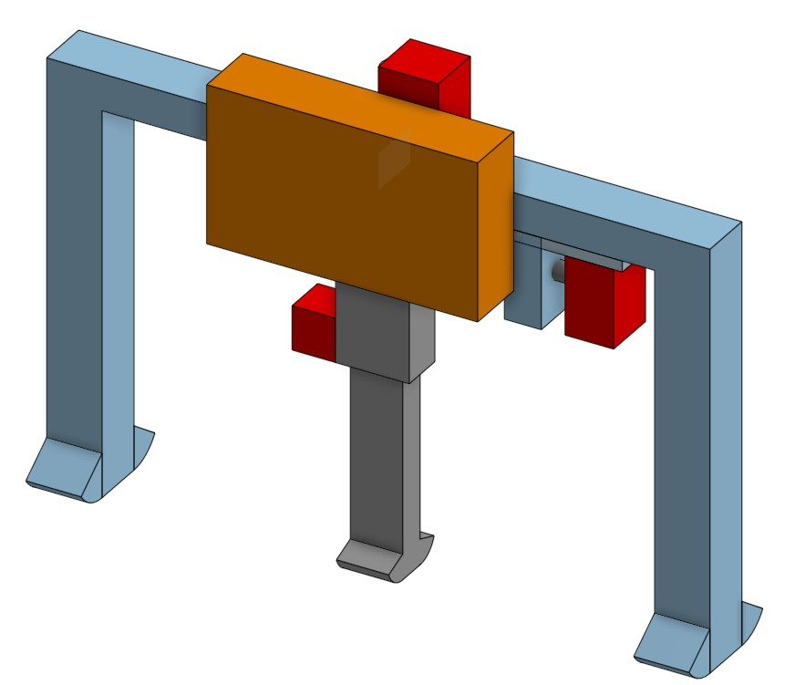
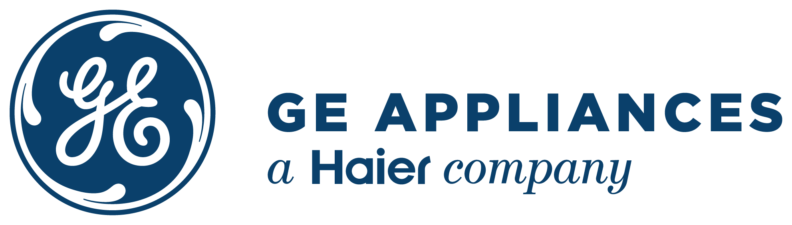
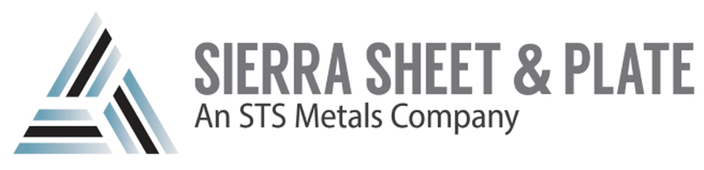
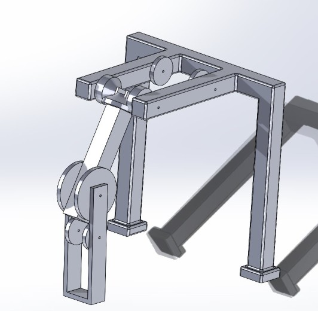
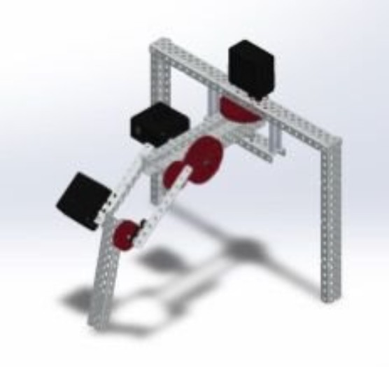
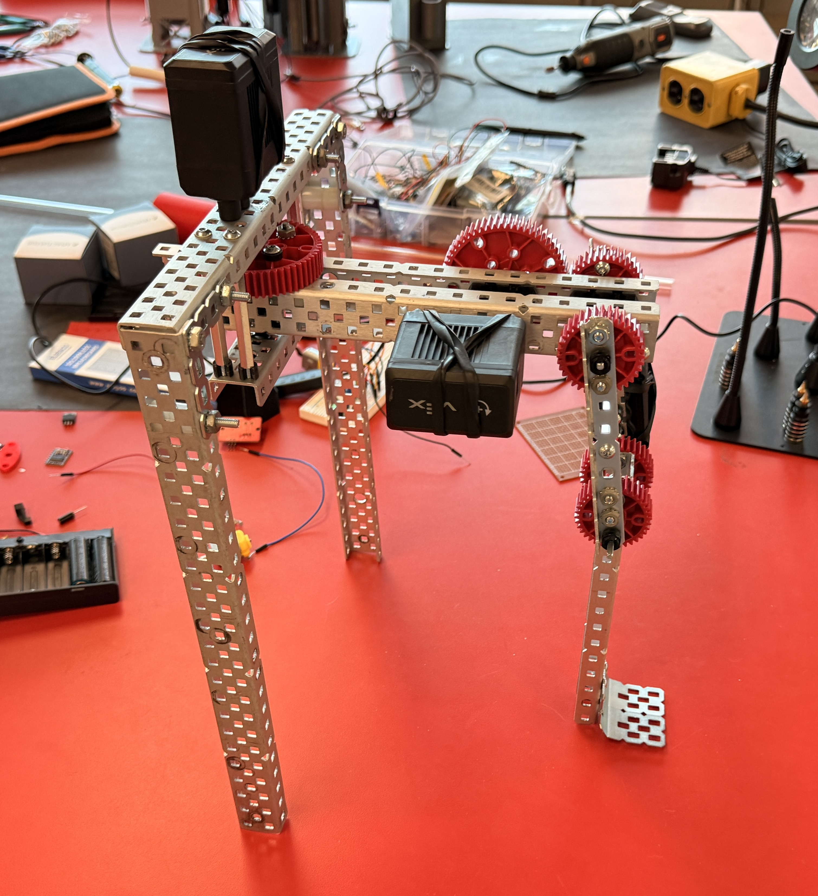
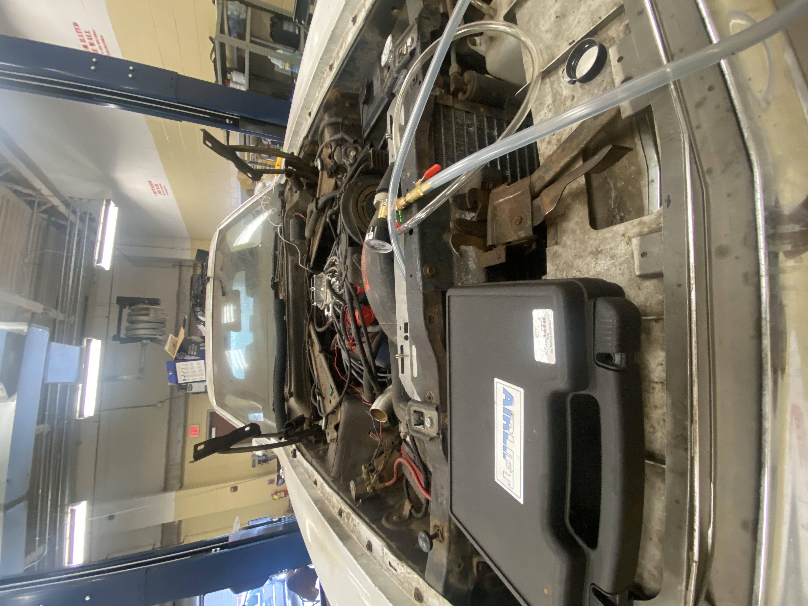
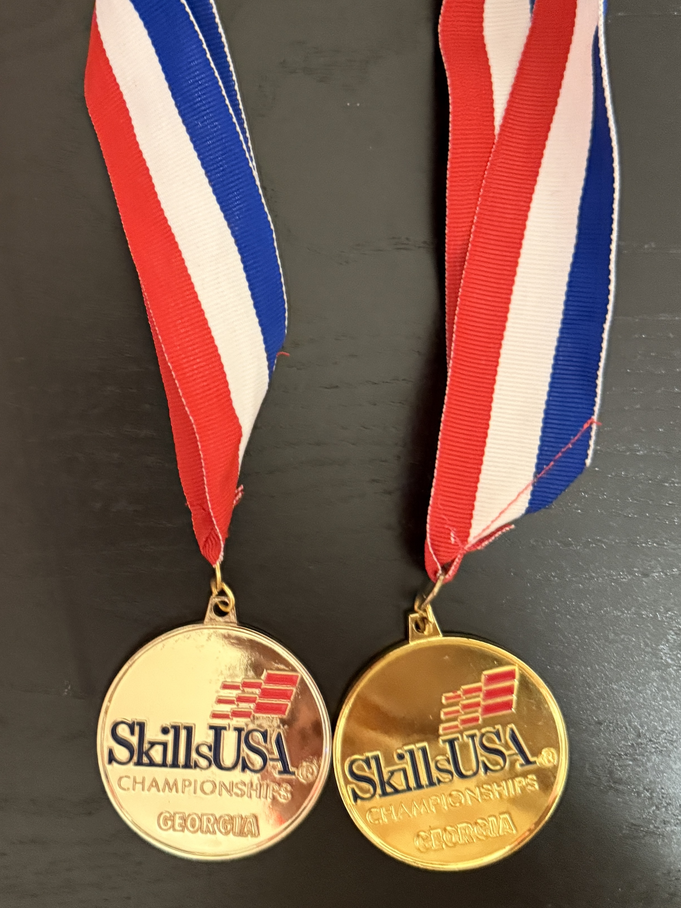
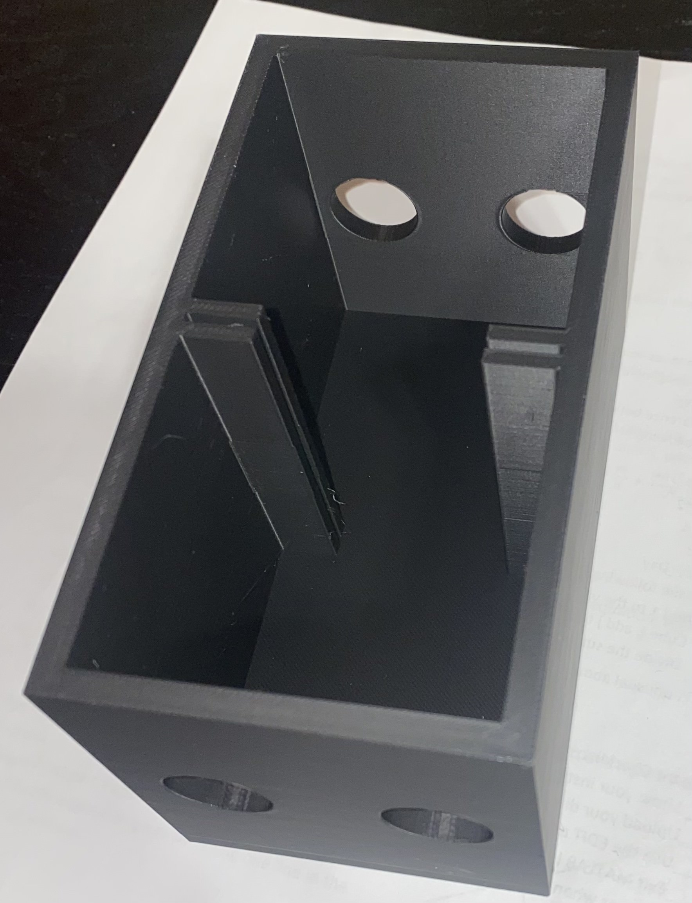

Concept A, my pitch
Minimum part count to keep the weight down. It solved that problem and then failed on stability, with simulation showing a nudge from front or back would tip it.
Industrial and systems engineering student focused on production line design and process data. Currently a manufacturing engineering intern at GE Appliances in Louisville, where a laundry unit is completed roughly every twenty seconds. Previously in aerospace titanium, where output is measured in tens of pieces per day. Most of my work involves finding where a process loses time or accuracy, then building the measurement that makes it visible.

I work on the supply chain side of a new laundry program at Appliance Park, a $490 million reshoring project moving combo washer dryer and front load washer production from China to Louisville. My scope is line design: how material moves through assembly, where stations sit, and what constrains throughput before the line runs at volume.
I report to an Advanced Industrial Engineer and spend much of my time shadowing, which is appropriate at this stage. It has also meant sitting in with the project heads running the AP1 revamp. Alongside that I develop mockups for tool holder designs on the new line and document process issues as I come across them. One of those proposals has been approved for testing.
The plant keeps a testing area where an assembly line can be mocked up and walked before it is built. GE also offers coursework to employees, and I take what fits around the assignment, including data analytics.
A washing machine is not a complicated object. One person with the right tools could build one in an afternoon. The difficulty is building two thousand a day without losing a second, because a one second slowdown across the line accumulates into hundreds of thousands of dollars within days. That figure changed how I think about the work.
The lean organization here treats ergonomics as a cost driver rather than a courtesy, which has removed millions in cost over recent years.
Lean and industrial engineering work reduces headcount, which places the team in a particular relationship with the union.
I learned that early on. I had been observing an operator the way I would have at my previous job, and was corrected: here you inform the person first and confirm they are comfortable with it, and trying a job yourself requires approval through the union. It was a fair correction, and a reminder that a station is not only a sequence of motions.
Line configurations, product details, and internal figures are omitted, as this is an active program.

Titanium sheet and plate, at the slow end of manufacturing. When material has to arrive pristine, every step is deliberate. I set up the layout and workflow for a new ultrasonic testing tank, which meant planning how parts arrive, are inspected, and leave without forming a queue behind them.
The analysis is the work I would point to. Six months of readings at one second intervals is several million rows, most of it idle state noise. Cleaning it down to the active production window and comparing month against month surfaced a variance pattern that traced to a hydraulic component operating out of spec. It had survived one replacement and was not visible to manual inspection.
I also built internal tooling: automating a report that previously required tracing each part's process history by hand, and designing a spare parts inventory system for the maintenance team.
Process parameters, equipment specifics, tolerances, part numbers, and production figures are omitted in line with export control requirements and the confidentiality terms of my employment agreement.
Humanoid robots are expensive, and much of that cost is stabilization. Copying the human form factor means inheriting a problem the body solves with hundreds of muscles firing continuously, and each of those has to be paid for in actuators. Our group asked a narrower question: how much of what a humanoid does can be achieved with three?
The approach was one active leg and two passive, using crutch assisted walking geometry, a direction set by the lab director. Three concepts went forward for the leg design. Two did not survive review, including mine.

Minimum part count to keep the weight down. It solved that problem and then failed on stability, with simulation showing a nudge from front or back would tip it.

Better range of motion and a strong design overall. The knee joint required manufacturing precision our budget and timeline could not support.

Resolved the stability failure in Concept A without taking on Concept B's machining complexity. This is what went to fabrication.
We fabricated in standard COTS aluminum framing, which let us test real geometry in days rather than waiting weeks on custom parts. Across roughly twelve leg iterations we tracked payload capacity, system weight, and stride length, which gave us a basis for selecting the hybrid.
The robot walks. We also trained a small model, around a thousand parameters, to help it handle different surfaces, which was what the timeline allowed. Remaining work includes stair climbing and a docking station along the lines of what a robot vacuum uses, where it charges and swaps the top attachment for a given task, such as opening a door.

On the suspension sub team. My main responsibility was tearing down the 2025 chassis and identifying discrepancies against the CAD model, including a floor pan misalignment we tracked down and corrected.
I attend testing, team meetings, and software sessions to understand how the subsystems fit together, with the goal of taking a larger role in the manufacturing cycle.

I hold an ASE Entry Level Certification, though the more useful part is the work behind it: brake jobs, wheel balancing, welding rust patches, assisting with engine swaps.
Servicing cars that were difficult to work on because of earlier design decisions is a practical education in consequences. When I model a part now, I check whether it can actually be reached.

Real estate photography relies on HDR: five exposures of the same room merged into a single image. Done by hand it is roughly an hour of repetitive work per shoot.
The script groups the brackets, aligns them, and fuses them, which removed the task rather than shortening it. I stopped running the photography business because the return did not justify the hours, but the script is the part I kept.
# Core logic for batch processing HDR groups def process_groups(groups, output_folder, align_tool, enfuse_tool): if not os.path.exists(output_folder): os.makedirs(output_folder) for group in groups: # 1. Setup paths base_name = os.path.splitext(os.path.basename(group[0]))[0] output_file = os.path.join(output_folder, f"{base_name}_fused.tif") aligned_prefix = os.path.join(output_folder, "temp_aligned_") # 2. Align images using Hugin toolstack subprocess.run([align_tool, "-m", "-a", aligned_prefix] + group) aligned_files = glob.glob(aligned_prefix + "*.tif") # 3. Fuse aligned images into final HDR output cmd = [ enfuse_tool, "--output", output_file, "--exposure-weight=1.0", "--saturation-weight=0.2", "--contrast-weight=0" ] + aligned_files subprocess.run(cmd) # 4. Cleanup temp files for f in aligned_files: os.remove(f)
Abbreviated to show the logic. The full script handles errors, mismatched group sizes, and file management.
Competition and lab work from before KSU.
Qualifying ran through a written theory exam. Nationals involved building and programming a robot against a fixed time limit. State gold in 2024 and 2025.

A galvanic cell generating current from a glucose solution. It worked, but output was low: the membrane was too permeable and allowed the reactants to mix, which caps efficiency regardless of what else is done correctly.
The next revision uses a Nafion membrane to close that crossover path. Still a project I intend to finish.
